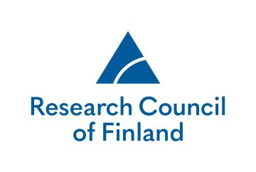
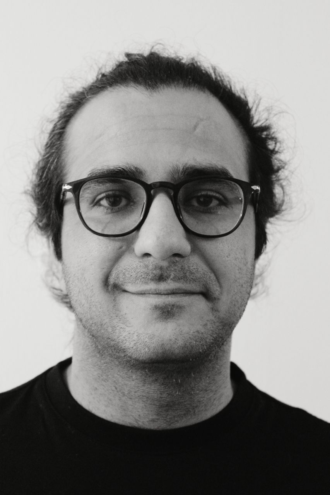
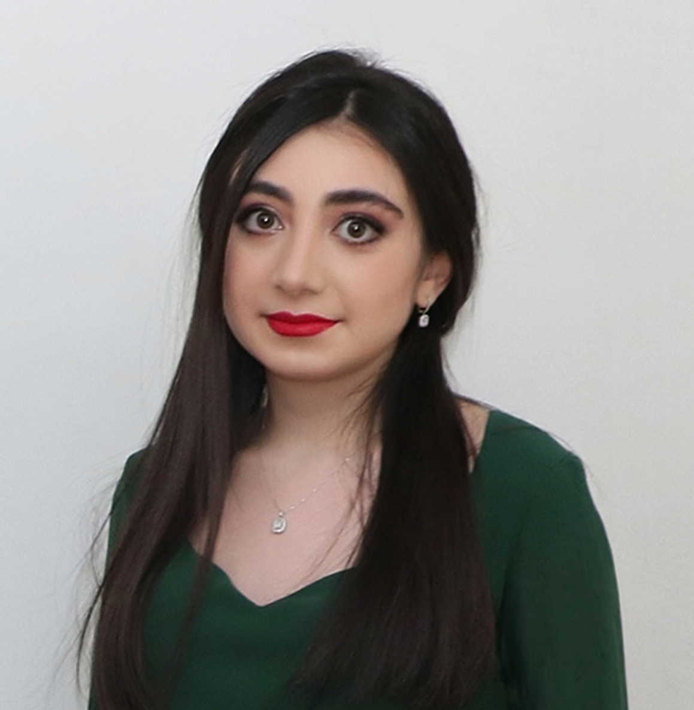
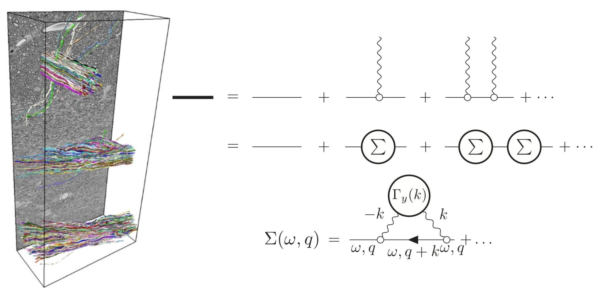
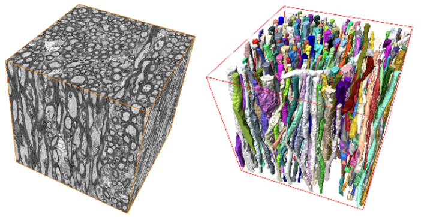
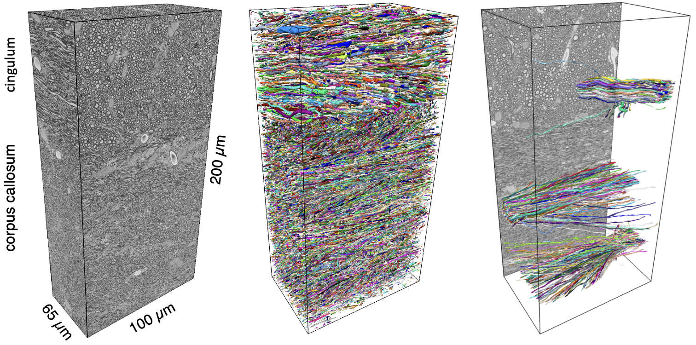
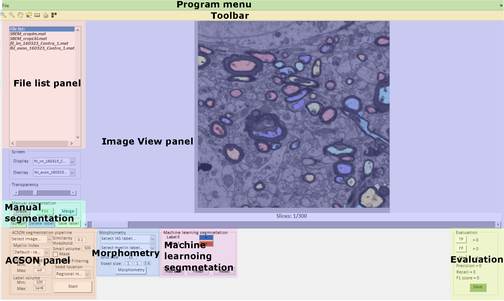
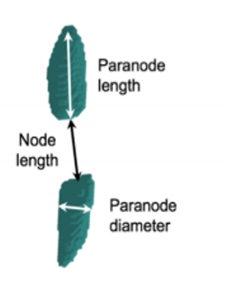
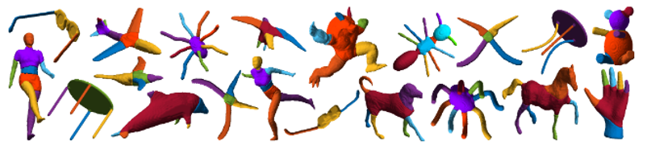
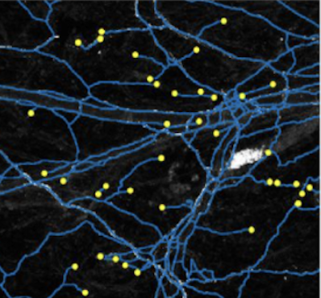

A.I. Virtanen Institute · University of Eastern Finland
Computational Neuroanatomy Lab
Advancing Brain Microstructure Mapping
Computational Neuroanatomy Lab, led by Dr. Ali Abdollahzadeh, is affiliated with the A.I. Virtanen Institute for Molecular Sciences at the University of Eastern Finland.
We seek to understand the statistical properties and organizational principles of brain tissue microstructures fundamental to understanding the macroscopic diffusion MRI signal—spanning across two to three orders of magnitude in spatial resolution.
We recently developed the scattering framework for diffusion in a tube with varying cross-sectional area and uncovered the relevant parameters that govern the diffusive dynamics of water in axons with Prof. Novikov.
To support this effort, we have introduced a family of computational tools that bridge microgeometry and diffusion: Scattering to Diffusion for linking structure to signal, and ACSON, DeepACSON, gACSON, and Skeletonize for segmentation and morphological analysis of large-scale electron microscopy volumes.
These developments have enabled realistic reconstructions of white matter microgeometry and its quantitative connection to diffusion MRI, supported by our publicly available datasets and tools.
Funding
Research Council of Finland

Team

ALI ABDOLLAHZADEH, PhD
Principal Investigator of Computational Neuroanatomy Lab
I graduated from the Signal Processing department of Tampere University of Technology, Finland, in 2016 and completed my PhD with distinction in medical image processing at the A.I. Virtanen Institute of the University of Eastern Finland in 2021.
I have developed advanced computational tools for segmentation and morphology analysis of large electron and light microscopy datasets, particularly focusing on white matter. Notably, the analyzed datasets are one of the largest electron microscopy volumes of white matter publicly available to date.
Following my PhD, I continued for two years as a postdoctoral fellow with the MRI Biophysics Group at New York University School of Medicine, spearheaded by Profs. Dmitry S. Novikov and Els Fieremans. With Prof. Novikov, we developed a scattering approach that links axonal microgeometry to its diffusion signal, a breakthrough that spans 2-3 orders of magnitude in resolution.
In 2024, I was honored to receive a prestigious four-year grant from the Research Council of Finland to pursue my project on generating Synthetic Brain Tissue that mimics the properties of a biological tissue.

Reyhaneh Aghayousefi, MSc
Project Researcher
Reyhaneh Aghayousefi received the B.Sc. degree in electrical engineering-control (EEC) from the University of Tehran, Tehran, Iran, in 2019, and the M.Sc. degree in EEC from the K. N. Toosi University of Technology, Tehran, Iran, in 2022. She has worked as a data science specialist with VR FleetCare, Helsinki, Finland, and as a computer vision specialist with Aalto University, Espoo, Finland. She is currently with the A. I. Virtanen Institute for Molecular Sciences, University of Eastern Finland, Kuopio, Finland. Her research interests include data fusion, machine learning, and deep neural networks for image and signal processing, with applications to healthcare, brain imaging, and human-centered AI aimed at improving quality of life.

Soheil Jafarifard, MSc
Project Researcher
Saeed Saravani, MSc
Project Researcher
Aasiyah Syed Abdullah, BSc
Intern
Whole Assembloids Image Analysis
We are hiring!
Research interests
Our research focuses on uncovering the statistical properties and organizational principles of brain tissue microstructures, primarily acquired using large-scale electron microscopy, that are fundamental to understanding their macroscopic diffusion MR signals. By identifying these properties, we aim to discover quantitative markers that can facilitate the early diagnosis of neurological disorders.
Our approach involves both theoretical advancements and the design and development of computational tools to model and analyze these microstructures.
Key questions guiding our work
- What are the underlying rules governing the organization of tissue microstructure?
- Which structural properties of brain tissue are conserved and contribute to the diffusion signal?
- How do neurological disorders alter the microgeometry of brain tissue?
Selected projects
Scattering approach to diffusion provides an analytical framework that links axonal microgeometry to macroscopic diffusion MRI signals. Our approach establishes a principled bridge between tissue microstructure and measurable diffusion parameters.

ACSON is an automated pipeline for 3D segmentation and morphometric analysis of white matter ultrastructure in large-scale electron microscopy data. It overcomes the limitations of 2D cross-sectional analysis by enabling full 3D quantification of axonal morphology. The pipeline segments key ultrastructural components—including myelinated axons, myelin, mitochondria, cells, and vacuoles—eliminating the need for manual annotation and enabling large-scale, high-throughput structural analysis.

DeepACSON is a deep learning–based pipeline for semantic and instance segmentation of large, low-resolution 3D-EM volumes. It combines CNN-based semantic segmentation with a tubularity-aware decomposition strategy to resolve under-segmented myelinated axons. Applied to low-resolution 3D-EM datasets, DeepACSON segmented hundreds of thousands of axons, nuclei, and millions of mitochondria, enabling high-throughput morphometric analysis and detection of nanoscopic white matter alterations in a rat model of brain injury.

gACSON is a MATLAB-based graphical interface for automated segmentation and morphometric analysis of myelinated axons in large 3D-EM brain datasets. Building on ACSON and DeepACSON, it integrates additional algorithms for unsupervised segmentation of myelin and intra-axonal space, requiring no manual annotations. gACSON offers interactive tools for reviewing, correcting, and selectively processing axons, along with instance-level myelin-to-axon mapping, enabling dynamic editing operations such as merge and split.

Segmentation and morphometry of paranodes and juxtaparanodes: On fluorescence images, we enhance curvilinear structures by computing the eigenvalues of the Hessian matrix at multiple scales and evaluating a functional that favors elongated, tube-like geometries while suppressing others. Applied an active surface model on the curvilinear-enhanced image, enabling topology-adaptive contour evolution. We detect the principal orientation of components and projected all components onto the principal axis to select paranoeds. We are enabled then to apply morphology analysis on paranodes and juxtaparanodes

Cylindrical shape decomposition is a skeleton-based algorithm for decomposing complex tubular objects into semantic components. It partitions the curve skeleton into maximal-length sub-skeletons based on an orientation cost, and identifies critical points by sweeping the object to detect geometric transitions. Components are segmented by cutting at these points and assigning labels along each sub-skeleton. The method reconstructs intersecting regions using generalized cylinders, enabling robust decomposition of tubular objects, such as axons, vascular networks, and synthetic structures—even under high surface noise—outperforming existing approaches in segmentation accuracy and structural fidelity.

Minimal path problem: Given two key points on tips on a tubular shape, e.g. an axon, the centerline is extracted by solving a minimal path problem. This involves computing a geodesic—i.e., a path of minimal energy—between the two points in the image domain. The energy functional is designed to follow image features such as intensity ridges while incorporating curvature regularization to encourage smooth, biologically plausible paths. This helps prevent shortcuts across low-energy regions and ensures the computed trajectory adheres to the natural curvature of the axon.

Selected publications
- A. Abdollahzadeh, R. Coronado-Leija, HH. Lee, A. Sierra, E. Fieremans, DS. Novikov, “Scattering approach to diffusion quantifies axonal damage in brain injury,” Nature Communications, vol. 16, 2025
- A. Abdollahzadeh, I. Belevich, E. Jokitalo, A. Sierra, and J. Tohka, “DeepACSON automated segmentation of white matter in 3D electron microscopy,” Communications Biology, vol. 4, 2021
- A. Abdollahzadeh, I. Belevich, E. Jokitalo, J. Tohka, and A. Sierra, “Automated 3D Axonal Morphometry of White Matter,” Scientific Reports, vol. 9, 2019
- A. Abdollahzadeh, A. Sierra, and J. Tohka, “Cylindrical Shape Decomposition for 3D Segmentation of Tubular Objects,” IEEE Access, vol. 9, 2021
- A. Abdollahzadeh, R. Coronado-Leija, S. Mehrin, H.-H. Lee, E. Fieremans, and DS. Novikov, “Quantifying changes of axonal shape in traumatic brain injury with time-dependent diffusion,” ISMRM, Singapore, 2024
- A. Abdollahzadeh, R. Coronado-Leija, E. Chasen, and E. Novikov DS. Fieremans, “Sensitivity of quantitative MRI to demyelination and axonal loss: validation against myelinated and unmyelinated axons from histology,” ISMRM Singapore, 2024
- A. Behanova, A. Abdollahzadeh, I. Belevich, E. Jokitalo, A. Sierra, and J. Tohka, “gACSON software for automated segmentation and morphology analyses of myelinated axons in 3D electron microscopy,” Computer Methods and Programs in Biomedicine, vol. 220, 2022
- R. Coronado-Leija, A. Abdollahzadeh, H.-H. Lee, S. Coelho, B. Ades-Aron, Y. Liao, R. Salo, J. Tohka, A. Sierra, N. DS., and E. Fieremans, “Volume electron microscopy in injured rat brain validates white matter microstructure metrics from diffusion MRI,” Imaging Neuroscience, vol. 2, 2024
- M.-K. Koskinen, M. Laine, A. Abdollahzadeh, et al., “Node of Ranvier remodeling in chronic psychosocial stress and anxiety,” Neuropsychopharmacology, 2023
Resources
Our group is committed to contributing developed software and acquired datasets to the scientific community by making it freely available on Github, open source projects, and open data repositories.
Software
- Scattering to diffusion A scattering framework for linking axonal microgeometry to diffusion signal.
- ACSON: A segmentation pipeline of white matter in electron microscopy images.
- DeepACSON: Deep learning-based segmentation of white matter in electron microscopy images.
- gACSON: (developed with Andrea Behanova) A graphical user interface-based software for the segmentation of white matter in electron microscopy images.
- Skeletonize: A Python-based 3D skeletonization algorithm for 3D objects.
- SproutAngio: (developed with Mustafa Beter) An Open-Source Bioimage Informatics Tool for Quantitative Analysis of Sprouting Angiogenesis and Lumen Space.
Open datasets
- Scattering approach to diffusion: Ex-vivo diffusion MRI and cross-sectional geometry of axons in a rat model of traumatic brain injury
- Segmentation of tissue microstructure in 3D high-resolution electron microscopy datasets of white matter
- Segmentation of tissue microstructure in 3D low-resolution electron microscopy datasets of white matter
- Segmentation of tissue microstructure in 3D high-resolution electron microscopy datasets of gray matter
Contact
Computational Neuroanatomy Lab
University of Eastern Finland | UEF | A.I. Virtanen Institute for Molecular Sciences
Neulaniementie 2 | P.O. Box 1627 | 70211 Kuopio | Finland
Email: aliabd@uef.fi